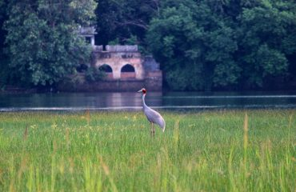

Junona Lake
Junona Lake
Junona talav (lake) and forest is named after the village Junona which is located in jungle are at 8 km from Chandrapur town. This place is known for its scenery lake, where various types of birds visit during different seasons around the year. Sightings of carnivorous animals such as tigers, leopards and other wildlife animals in the forest area is sighted quite frequently.
About

One of the best place in chandrapur district is Junona Lake . Beautiful sunset seens and silent nature and charming of birds.Great place for One day trip especially in rainy days when the lake is almost full. The lake is very big in area with lots of trees and jungle surrounded. On your way to Lake from either Chandrapur or Balharshah, you'll get to see wild animals if luck is in your side. It is great picnic spot with many place for taking beautiful pics. Great place for Pre wedding photoshoot. Connectivity :- Almost 10 kms from both Balharshah and Chandrapur. Road is in very fine condition. Time to Visit:- Can visit in any month but June to December are best months to see beauty of the place.